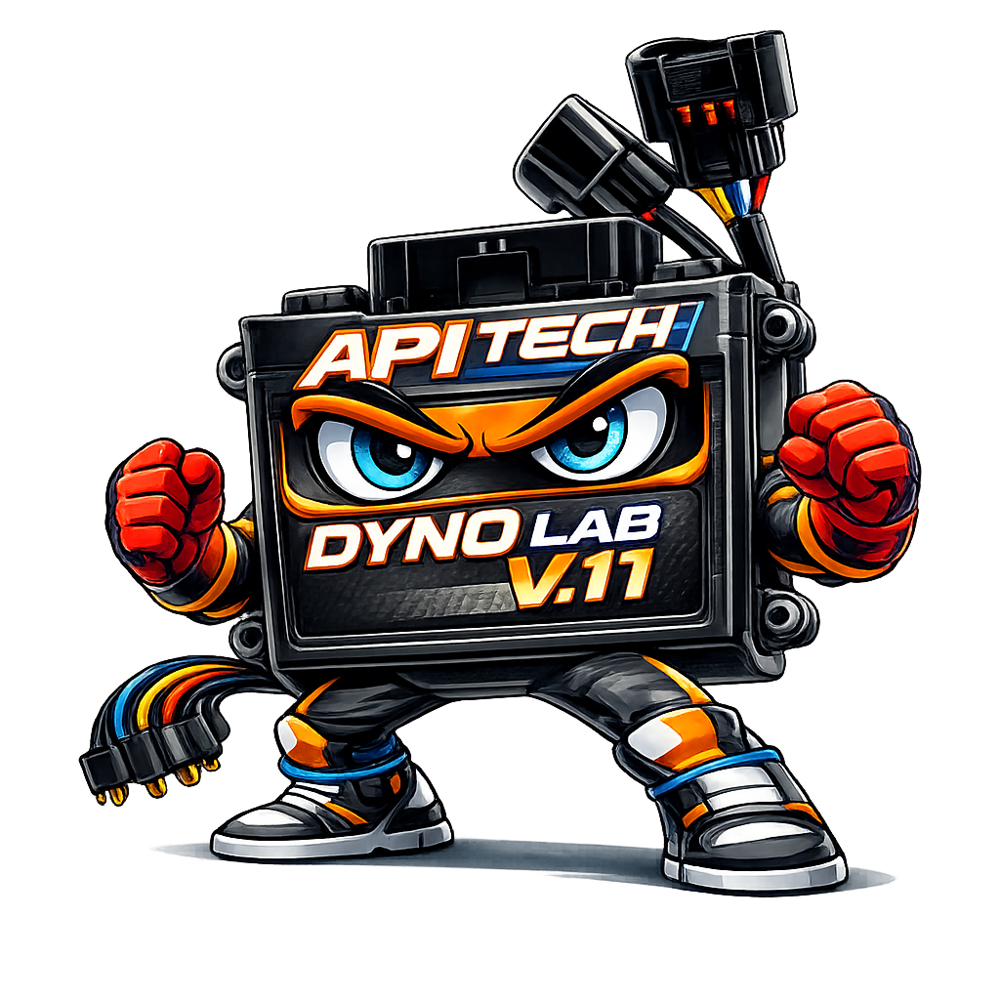

AI API
TECH
T0.1
ONLINE
⚖
🕐
0
🧹
HISTORY
ล้างทั้งหมด
ยังไม่มีประวัติ
UNIT CONVERTER
แรงดัน
แรงบิด
ความยาว
ความเร็ว

AI API
TECH
T0.1
ระบบวิเคราะห์และคำนวณเครื่องยนต์อัจฉริยะ
🔍
รหัสความผิดปกติ OBD / ECU
⚙️
คำนวณ CC / รูลูกสูบ / ระยะชัก
💨
อัตราส่วนอากาศต่อเชื้อเพลิง (AFR)
🔩
อัตราส่วนกำลังอัดสถิต (Static CR)
📊
ความเร็วลูกสูบเฉลี่ย + ปริมาณอากาศ
💥
แรงดันตอนอัด / แรงดันตอนระเบิด
🔬
กำลังอัดพลวัต (Dynamic CR)
📋
ตารางเช็คระยะ / บำรุงรักษา
🌬️
ประสิทธิภาพการอัดอากาศ (VE%)
💉
คำนวณขนาดหัวฉีด (Injector Sizing)
🔧
คำนวณเมนเจ็ตคาร์บูเรเตอร์(Carburetor Jet Size)
⚡
องศาจุดระเบิด (Ignition Timing)
🎛️
ขนาดลิ้นเร่ง (Throttle Body Size)
🏍️
ประเมินแรงม้า / แรงบิด (HP / Torque)
🔴
ขนาดท่อไอเสีย (Exhaust Header)
🟢
ความยาวท่อไอดี (Intake Runner)
🔁
มุมแยกแคมชาฟต์ (Valve Timing LSA)
🌡️
ระบบหล่อเย็น (Coolant Flow Rate)
🛢️
เลือกเกรดน้ำมันเครื่อง (Oil Viscosity)
🔥
ความร้อนที่ลูกสูบรับ (Piston Heat Load)
⚠️
ความเสี่ยงน็อค (Detonation Risk)
📏
อัตราส่วนก้านสูบ (Rod Ratio)
⛽
ค่าออกเทนที่ต้องการ (Octane Requirement)
🔄
ความแข็งสปริงวาล์ว (Valve Spring Rate)
⚖️
อัตราส่วนกำลังต่อน้ำหนัก (Power/Weight)
🔗
อัตราทดเกียร์ / สเปรกโซ่ (Gear Ratio)
🌀
ความแข็งโช้คอัพ (Spring Rate)
📐
ตั้งค่าระยะยุบโช้ค (Sag Setup)
↗️
มุมคอแกน / ระยะเลื่อน (Rake & Trail)
📏
ความยาวสวิงอาร์ม (Swingarm)
🛑
สัดส่วนแรงเบรก (Brake Bias)
⭕
ขนาดจานเบรก (Brake Disc Size)
🚦
ระยะเบรกหยุด (Braking Distance)
🔩
ขนาดลูกสูบคาลิปเปอร์ (Caliper)
⚡
วิเคราะห์แรงดันชาร์จ (Charging Voltage)
🔋
กำลังไฟ Stator Output
🔌
ขนาดฟิวส์ (Fuse Rating)
🔆
ความสามารถสตาร์ทเย็น (Battery CCA)
🏋
ดัชนีรับน้ำหนักยาง (Load Index)
⬤
เส้นรอบวงยาง (Rolling Circumference)
🔢
ความคลาดเคลื่อนมาตรวัด (Speedo Error)
💨
แรงดันลมยางตามน้ำหนัก (Tire Pressure)
🔘
ความกว้างวงล้อที่รองรับ (Rim Width)
»
REC
0
🎙
SEND
COPIED TO CLIPBOARD